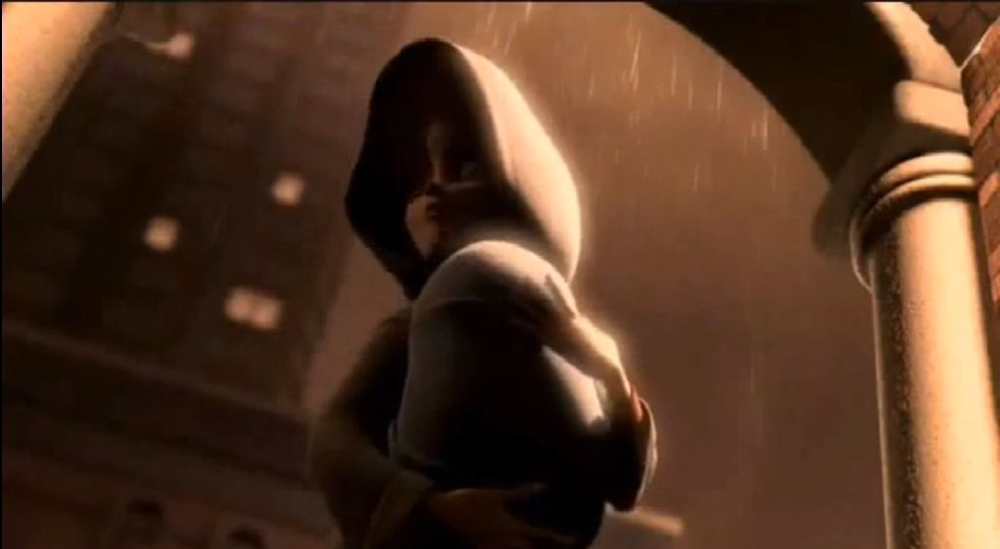
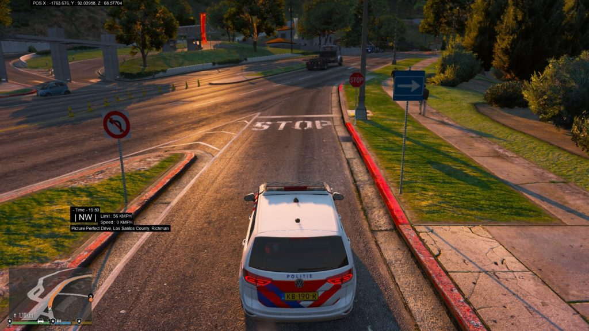
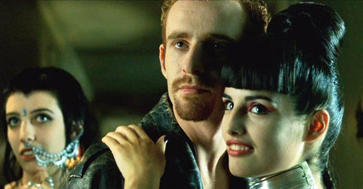

Multiple Part Post
This post is a multiple part post. I have labeled them…
- The Geography of Heaven; Journey of Souls – 1a
- The Geography of Heaven; Journey of Souls – 1b
- The Geography of Heaven; Journey of Souls – 1c
- The Geography of Heaven; Journey of Souls – 1d
- The Geography of Heaven; Journey of Souls – 1e – This post.
Choosing a New Body
IN the place of life selection, our souls preview the life span of more than one human being within the same time cycle. When we leave this area, most souls are inclined toward one leading candidate presented to us for soul occupation.
However, our spiritual advisors give us ample opportunity to reflect upon all we have seen in the future before making a final decision. This chapter is devoted to the many elements which go into that decision.
Our deliberations over body alternatives actually begin before we go to the place of life selection. Souls do this in order to adequately prepare themselves for viewing certain people in different cultural settings on Earth. I sense those souls who set up the screening room know in advance what to show us, because of these thoughts in our minds.
Great care must be taken in choosing just the right body to serve us in the life to come. As I have said, guides and peer group members are part of this evaluation process prior to, and after, we visit the place of life selection.
When listening to my subjects describe all the preparations which go into picking a new physical body, I am constantly reminded of the fluidity of spiritual time. Our teachers use relative future time in the place of life selection to allow souls to measure human usefulness for working on unfinished lesson plans.
Blueprints for the next life vary in the degree of difficulty the soul-mind sets for itself. If we have just come off an easy life, making little interpersonal progress, our soul might want to choose a person in the next time cycle who will face heartache and perhaps tragedy. It is not out of the ordinary for me to see someone who has skated through an unchallenging life overloading themselves with turmoil in the next one to catch up with their learning goals.
The soul-mind is far from infallible as it works in conjunction with a biological brain. Regardless of our soul level, being human means we will all make mistakes and have the necessity of engaging in midcourse corrections during our lives. This will be true with any body we select.
Before taking up the more complex mental factors in a soul’s decision to join with the brain of a human baby, I will begin with the physical aspects of body choice. Despite the fact that our souls know in advance what they are going to look like, a national survey in the United States indicated 90 percent of both males and females were dissatisfied with the physical characteristics of their bodies. This is the power of conscious amnesia. Much unhappiness is created by society stereotyping an ideal appearance. Yet, this too is part of a soul’s lesson plan.
How many times have we all looked in a mirror and said; “Is this the real me? Why do I appear this way? Am I in a body where I belong?” These questions are especially poignant when the type of body we have prevents us from doing those things we think we ought to be able to do in life. I have had a number of clients who came to me convinced their bodies prevented them from achieving satisfying lives. Many handicapped people think if it were not for a genetic mistake, or being the victim of an accidental injury which damaged their body, their lives would be more fulfilled. As heartless as this may sound, my cases show few real accidents involving body damage which don’t fall under the free will of souls. As souls, we choose our bodies for a reason. Living in a damaged body does not necessarily have to involve a karmic debt we are paying off because of past life responsibility for an injury to someone else. As my next case will demonstrate, when a soul is inside a damaged body, this choice can involve a learning path to another type of lesson.
It is difficult to tell a newly-injured person trying to cope with physical disablement
that he or she has an opportunity to advance at a faster rate than those of us with healthy bodies and minds. This knowledge must come through self-discovery. The case histories of my clients convince me that the effort necessary to overcome a body impediment does accelerate advancement. Those of us whom society deems less- than-perfect suffer discrimination which makes the burden even heavier. Overcoming the obstacles of physical ailments and hurt makes us stronger for the ordeal.
Our bodies are an important part of the trial we set for ourselves in life. The freedom of choice we have with these bodies is based far more on psychological elements than from the estimated 100,000 genes inherited by each human being. However, I want to show in the opening case of this chapter why souls want certain bodies based largely on physical reasons without heavy psychological implications.
The case exhibits the planning involved in the decision of a soul to be in contrasting physical bodies in different lives. After this case, we will examine why souls choose their bodies for other reasons.
Case 26 was a tall, well-proportioned woman who enjoyed participating in sports despite being bothered all her life with recurring leg pains. During her preliminary interview, I learned the pain was a dull ache in both legs, about midway down the thighbones. Over a period of years she had been to a number of doctors who could find no medical evidence of anything wrong with her legs. Clearly, she was worn down and willing to try anything for relief.
When I heard the doctors had concluded her discomfort was probably psychosomatic, I suspected the origin of this woman’s pain might lie in a past life. Before going to the source of her problem, I decided to take my client through a couple of past lives to ascertain her motivations for body choices. When I asked her to tell me about a life in which she was the happiest with a human body she told of being in the body of a Viking called Leth around 800 AD. She said Leth was “a child of nature” who traveled by the Baltic Sea route into western Russia.
Leth was described as wearing a long, fur-lined cloak and soft, form-fitting animal skin pants with roped-up boots and a cap wrapped with metal. He carried an ax and a heavy, broad-bladed sword which he wielded easily in battle. My subject was intrigued by the picture in her mind of again being inside this magnificently proportioned warrior with “dirty strands of reddish-blond hair spilling over my shoulders.” Standing well over six feet tall, he must have been a giant of his time, with enormous strength, a huge chest, and powerful limbs. A man of great endurance, Leth navigated with other Norsemen over long distances, sailing up rivers and hiking through thick, virgin forests, pillaging settlements along the way. Leth was killed during a raid while looting a village.
Case 26 – Leth
Dr. N: What was most important to you about this life you have just recalled as Leth the Viking?
S: To experience that magnificent body and the feeling of raw physical power. I have never had another body like that one in all my existences on Earth. I was fearless because my body did not react to pain even when wounded. In every respect it was flawless. I never got sick.
Dr. N: Was Leth ever mentally troubled by anything? Was there any emotional sensitivity for you in this life?
S: (bursts out laughing) Are you kidding? Never! I lived only for each day. My concerns were not getting enough fighting, plunder, food, drink, and sex. All my feelings were channeled into physical pursuits. What a body!
Dr. N: All right, let’s analyze your decision to choose this great body in advance of Leth’s life. At the time you made your choice in the spirit world did you request this body of good genetic stock or did your guide simply make the selection for you?
S: Counselors don’t do that.
Dr. N: Then explain to me how this body came to be chosen by you.
S: I wanted one of the best physical specimens on Earth at the time and Leth was offered to me as a possibility.
Dr. N: You had only one choice?
S: No, I had two choices of people living in this time.
Dr. N: What if you didn’t like any of the body choices presented to you for occupation in that time segment?
S: (thoughtfully) The alternatives of my choices always seem to match what I want to experience in my lives.
Dr. N: Do you have the sense the counselors know in advance which body selections are exactly right for you, or are they so harried it’s just an indiscriminate grab bag of body choices?
S: Nothing here is careless. The counselors arrange everything.
Dr. N: I have wondered if the counselors might get mixed up once in a while. With all the new babies born could they ever assign two souls to one baby, or leave a baby without a soul for a while?
S: (laughing) We aren’t in an assembly line. I told you they know what they are doing. They don’t make mistakes like that.
Dr. N: I believe you. Now, as to your choices, I am curious if two bodies were sufficient for your examination in the place of life selection.
S: We don’t need a lot of choices for lives once the counselors get their heads together about our desires. I already had some idea of the right body size and shape and the sex I wanted before being exposed to my two choices.
Dr. N: What was the body choice you rejected in favor of Leth?
S: (pause) That of a soldier from Rome… also with the strong body I wanted in that lifetime.
Dr. N: What was wrong with being an Italian soldier?
S: I didn’t want … control over me by the state (subject shakes head from side to side) … too restrictive …
Dr. N: As I remember, by the ninth century much of Europe had fallen under the authority of Charlemagne’s Holy Roman Empire.
S: That was the trouble with the soldier’s life. As a Viking I answered to nobody. I was free. I could move around with my band of invaders in the wilderness without any governmental control.
Dr. N: Then freedom was also an issue in your choice?
S: Absolutely. The freedom of movement… the fury of battle the use of my strength and uninhibited action. Life at sea and in the forests was robust and constant. I know the life was cruel, too, but it was a brutal time. I was no better or worse than the rest.
Dr. N: But what about other considerations, such as personality?
S: Nothing bothered me as long as I was able to physically express myself to the fullest.
Dr. N: Did you have a mate-children?
S: (shrugs) Too restrictive. I was on the move. I possessed many women-some willing-others not-and this pleasure added to my expression of physical power. I didn’t want to be tied down in any way.
Dr. N: So, the body of Leth was your preference as a pure physical extension of sensual feeling?
S: Yes, I wanted to experience all body senses to the fullest, nothing more.
I felt my subject was now ready to go to work on her current problem. After bringing her out of superconscious into a subconscious state, I asked her to go directly to a life which may have involved leg pain.
Almost at once the woman dropped into her most recent past life and became a six- year-old girl named Ashley living in New England in the year 1871. Ashley was riding in a fully loaded, horse-drawn carriage when suddenly she opened the door and tumbled out under the vehicle. When she hit the cobblestone street, one of the heavy rear carriage wheels rolled over her legs at the same point above both knees, crushing the bones. My subject reexperienced a sharp pain in her legs while describing the fall.
Despite efforts from local physicians and the prolonged use of wood splints, Ashley’s leg bones did not heal properly. She was never able to stand or walk again and poor circulation caused repeated swelling in her legs for the rest of a rather short life. Ashley died in 1912 after a productive period of years as a writer and tutor of disadvantaged children. When the narration of Ashley’s life ended, I returned my subject to the spirit world.
Dr. N: In your history of body choices why did you wait a thousand years between being a physically strong man and a crippled woman?
S: Well, of course, I developed a better sense of who I was during
the lives in between. I chose to be crippled to gain intellectual concentration. Dr. N: You chose a broken body for this?
S: Yes, you see, being unable to walk made me read and study more. I developed my mind … and listened to my mind. I learned to communicate well and to write with skill because I wasn’t distracted. I was always in bed.
Dr. N: Was any characteristic about your soul particularly evident in both Ashley and Leth the Viking?
S: That part of me which craves fiery expression was in both bodies.
Dr. N: I want you to go to the moment you were in the process of choosing the life of Ashley. Tell me how you decided on this particular damaged body.
S: I picked a family in a well-established, settled part of America. I wanted a place with libraries and to be taken care of by loving parents so I could devote myself to scholarship. I constantly wrote to many unhappy people and became a good teacher.
Dr. N: As Ashley, what did you do for this loving family who took care of you?
S: It always works two ways-the benefits and liabilities. I chose this family because they needed the intensity of love with someone totally dependent upon them all their lives. We were very close as a family because they were lonely before I was born. I came late, as their only child. They wanted a daughter who would not marry and leave them to be lonely again.
Dr. N: So it was a trade-off? S: Most definitely.
Dr. N: Then let’s track this decision further back to the place of life selection, when your soul first saw Ashley’s life. Did you see the details of your carriage accident then?
S: Of course, but it wasn’t an accident-it was supposed to happen.
Dr. N: Once you came to Earth, who was responsible for the fall? Was it your soul- mind or Ashley’s biological mind?
S: We worked in unison. She was going to be fooling with the carriage door handle and … I capitalized on that
Dr. N: Tell me what was going through your soul-mind in the life selection room when you saw the scene of Ashley falling and being injured?
S: I thought about how this crippled body could be put to good use. I had some other choices for body injuries, but I preferred this one because I didn’t want to have the capability for much movement.
Dr. N: I want to pursue the issue of causality here. Would Ashley have fallen anyway if she had a soul other than your own?
S: (defensively) We were right for each other…
Dr. N: That doesn’t answer my question.
S: (long pause) There are forces beyond my knowledge as a spirit. When I saw Ashley for the first time … I was able to see her without me … healthy … older … another life possibility…
Dr. N: Now we are getting somewhere. Are you saying if Ashley had begun her life with another soul entity that she might not have fallen at all?
S: Yes … that’s a possibility … one of many … she could also have been less severely injured, with the ability to walk on crutches.
Dr. N: Well, did you see a physically healthy Ashley living happily without your soul?
S: I saw … a grown woman … normal legs … unhappiness with a man … frustration at being trapped in an unrewarding life … sorrowful parents … but easier. (voice becomes more firm) No! That course would not have worked well for either of us-I was the best soul for her.
Dr. N: Were you the prime mover of the fall, once you elected to be-come Ashley’s soul?
S: It … was both of us … we were one at that moment … she was being naughty, bouncing around in the carriage, playing with the door handle when her mother said she must stop. Then … I was ready and she was ready…
Dr. N: Just how rigid was your destiny? Once you were Ashley’s soul was there any way you could have backed out of this entire incident in the carriage?
S: (pause) I can tell you I had a flash just before I fell. I could have pulled back and not fallen out. A voice inside my mind said…”It’s an opportunity, don’t wait any longer, take the fall, this is what you wanted-it’s the best course of action.”
Dr. N: Was that particular moment important?
S: I didn’t want Ashley to get too much older.
Dr. N: But, the pain and suffering this child went through . . .?
S: It was horrible. The agony of those first five weeks was beyond belief. I almost died, but I learned from enduring it all and I now see the memories of Leth’s capacity for managing pain helped me.
Dr. N: Did your inner mind have any regrets during those moments when the pain was most severe?
S: As I slipped in and out of consciousness during the worst of the ordeal, my mind began gaining in power. Overriding my damaged body, I started to better control the pain … lying in bed… the doctors helpless. The skills I developed in managing pain were later used to concentrate on my studies and my counselor was helping me, too, in subtle ways.
Dr. N: So you gained a lot in this life by being unable to walk?
S: Yes, I became a listener and thinker. I corresponded with many people and learned to write with inspiration. I gained teaching ability with the young, and felt guided by an internal power.
Dr. N: Was your counselor proud of your accomplishments after you returned to the spirit world?
S: Very, although I was told I had become a little too indulged and pampered (laughs), but that’s an okay trade-off.
Dr. N: How does your experience with the strong body of Leth and the weak one of Ashley help you today, or is this of no consequence?
S: I benefit every day by my appreciation of the necessity of a union between mind and body to learn lessons.
During my client’s reliving of the street scene which broke her legs, I initiated desensitization measures. At the close of our session together, I then deprogrammed her generational memory of leg pain entirely. This woman later notified me she has had no further pain and regularly enjoys playing tennis.
The two past lives I have represented in this case were largely devoted to physical choices for soul actualization in two quite different environments.
Souls search for self-expression by developing different aspects of their character. Regardless of what physical or mental tools are used through the use of many bodies, the laws of karma will prevail. If the soul chooses one extreme, somewhere down the line this will be counterbalanced by an opposite choice to even-out development. The physical lives of Leth and Ashley are examples of karmic compensation. The Hindus believe a rich man sooner or later must become a beggar for his soul to develop adequately.
By surviving different challenges our soul identity is strengthened. The word strength should not be misunderstood. My subjects say the real lessons of life are learned by recognizing and coming to terms with being human. Even as victims, we are beneficiaries because it is how we stand up to failure and duress which really marks our progress in life. Sometimes one of the most important lessons is to learn to just let go of the past.
While souls carefully consider the physical attributes of an Earth body in a variety of cultural settings, they give much more attention to the psychological aspects of human life. This decision is the most vital part of the entire selection process for the soul.
Before entering the place of life selection, it is to a soul’s advantage to ponder the factors of heredity and environment which affect how a biological life form will function.
I have heard that a soul’s spiritual energy has a fluctuating influence on whether the temperament of its human host will be extroverted or introverted, rationalistic or idealistic, emotionally or analytically dominated. Because of such variables, souls need to reflect in advance on the types of bodies which will serve them best in the life to come.
From what I can gather, a soul’s thoughts about certain human behavior preferences for themselves in the next life are known by guides and those masters charged with operating the life selection stations. It appears to me some souls take this responsibility more seriously than others.
Yet, a soul in the prelife selection phase can reflect only so much on how they would fit into a specific body. When souls are called to the place of life selection the guesswork is over. Now they must match their spiritual identity against a mortal being. Why one soul joined, for psychological reasons, with two human beings thousands of years apart is the basis of my next case.
Case 27 is a Texas businessman who owns a large, successful clothing firm. During a vacation in California, Steve came to see me on the advice of a friend.
As I took his history, I noticed he was tense and hypervigilant. While his fingers toyed with a key chain, Steve’s eyes darted anxiously around my office. I asked if he was nervous or afraid of hypnosis as a procedure and he replied, “No, I’m more afraid of what you will uncover.”
This client told me his employees were demanding and disloyal and the multitude of personnel complaints had become intolerable. His solution had been to increase discipline and fire people. I learned that he had two failed marriages and was a binge alcoholic. He said he had recently tried a recovery program but quit because “they were getting too critical of me.”
As we talked further, Steve explained that his mother disappeared after leaving him on the steps of a church in Texas within a week of his birth. After a few lonely and unhappy years in an orphanage, an older couple adopted him. He added that these people were stern disciplinarians who seemed to disapprove of him all the time. Leaving home in his teens, Steve had many scrapes with the law and once attempted suicide.
I found this client’s personality to be overly assertive and untrusting of authority.
His anger was rooted in feelings of isolation and abandonment issues. Steve said he felt like he was losing control over his life and was willing to try anything “to find the real me.” I agreed to short-term exploration of his unconscious mind if he would consider seeing a therapist later in his own town for sustained counseling.
As this case unfolds, we will see how Steve’s soul maintains its identity while responding to physical life in a human body. The intensity of this association is increased in hypnosis when my subjects discuss their motives for body selection. One reason why I have used this case is to expose a difficult barrier to discovering our identity-that of childhood trauma.
Souls who unite with people that develop early personality disorders deliberately set themselves up for a difficult life.
Before taking my client into the spirit world to learn why his soul chose this life, it was necessary to relive his early childhood memories. In the short excerpt which begins this case, this subject will see his real mother again. It is one of the most poignant scenes I have ever facilitated.
Case 27 – Steve
Dr. N: You are now a baby in the first week of life and your mother is seeing you for the last time. It doesn’t matter that you are a baby because your inner adult mind knows everything that is going on. Describe to me exactly what transpires.
S: (subject starts to shake) I … I’m in a basket … there is a faded blue blanket around me … I’m being set down on some steps… it’s cold …
Dr. N: Where are these steps?
S: … In front of a church… in Texas.
Dr. N: Who is setting you down on the church steps?
S: (the shaking increases) My mother … is bending down over me … saying goodbye … (begins to cry)

Dr. N: What can you tell me about your mother’s reason for leaving you?
S: She … is young … not married to my father … he is already married. She is … crying … I can feel her tears falling on my face.
Dr. N: Look up at her. What else do you see?
S: (chokes) Flowing black hair … beautiful… I reach up and touch her mouth … she kisses me … soft, gentle … she is having a terribly hard time leaving me here.
Dr. N: Does she say anything to you before leaving?
S: (subject can now hardly talk) “I must leave you for your own good. I have no money to take care of you. My parents won’t help us. I love you. I will always love you and hold you in my heart forever.”
Dr. N: What happens then?
S: She … takes hold of a heavy door knocker… it has an animal on it… and bangs on the door… we hear footsteps coming… now she is gone.
Dr. N: What do your inner thoughts tell you about all you have seen?
S: (almost overcome by emotion) Oh … she wanted me after all … didn’t want to leave me … she loved me!
Dr. N: (I place my hand on the subject’s forehead and begin a series of post- hypnotic suggestions which end with the following instructions) Steve, you will be able to recall this subconscious memory in your conscious mind. You will retain this picture of your mother for the rest of your life. You now know how she truly felt about you and that her energy is still with you. Is this clear?
S: Yes … it is.
Dr. N: Now, move forward in time and tell me how you feel about your foster parents.
S: Never satisfied with me … made me feel guilty about everything … controlling and judging me … (subject’s face is dripping wet with tears and perspiration) don’t know who I am supposed to be. I’m not real.
Dr. N: (I raise my voice) Tell me what is unreal about you.
S: Pretending … (stops)
Dr. N: Keep going!
S: I’m not really in control … constant anger … mistreating people to … get even … hopelessness …
Note: After additional conditioning, I will now take my subject back and forth between his subconscious and superconscious mind.
Dr. N: All right Steve, now let’s go back to the time before your birth into this life. Tell me if you have ever lived in another life with the soul of your birth mother.
S: (long pause) Yes … I have.
Dr. N: Was there ever a particular life you lived with this soul on Earth which involved any sort of physical or emotional pain between the two of you?
S: (after a moment subject’s hands grip the arms of his chair) Oh, damn-that’s it-of course-it’s her!
Dr. N: Try to relax and not go too fast for me. I want you to enter the life you see in your mind at the most crucial point in your relationship with this soul on the count of three. One, two, three!
S: (a deep sigh) Oh my … it’s the same person … a different body but she was my mother then, too
Dr. N: Stay focused on the Earth scene. Is it day or night?
S: (pause) Broad daylight. Hot sun and sand …
Dr. N: Describe what is happening under the hot sun in the sand.
S: (haltingly) I am standing in front of my temple … before a large crowd of people … my guards are in back of me.
Dr. N: What is your name?
S: Haroum.
Dr. N: What are you wearing, Haroum?
S: A long, white robe and sandals. I have a staff in my hand with gold snakes on it as a symbol of my authority.
Dr. N: What is your authority, Haroum?
S: (proudly) I am a high priest.
Note: Further inquiries revealed this man was a tribal leader who was located on the Arabian peninsula close to the Red Sea around 2000 BC. In preclassical times, this area was known as the Kingdom of Sheba (or Saba). I also learned the temple was a large oval structure of mud bricks and stone dedicated to a moon god.
Dr. N: What are you doing in front of your temple?
S: I am on the steps judging a woman. She is my mother. She is kneeling down in front of me. There is a look of pity and fear in her eyes as she looks up at me.
Dr. N: How can her eyes show both pity and fear at once?
S: There is pity in her eyes because of the power which has consumed me … in taking so much control over the daily lives of my people. And there is fear, too, for what I am about to do. This disturbs me, but I must not show it.
Dr. N: Why is your mother kneeling on the temple steps before you?
S: She has broken into the storage house and stolen food to give to the people. Many are hungry at this time of year, but I alone can order distribution. The food must be measured out carefully.
Dr. N: Did she act against some rule of food rationing? Was this a question of survival?
S: (abruptly) There is more to this-by disobeying me she is undermining my authority. I use the distribution of food as a means of… control over my people. I want them all to be loyal to me.
Dr. N: What are you going to do with your mother?
S: (with conviction) My mother has violated the law. I can save her, but she must be punished as an example. I decide she will die.
Dr. N: How do you feel about killing your own mother, Haroum?
S: It must be done. She has been a constant thorn in my side-causing unrest among my people because of her position. I cannot govern freely with her here any longer. Even now, she is defiant. I order her death by banging my staff on the stone steps.
Dr. N: Later on are you sad about ordering your mother’s execution?
S: (voice becomes strained) I… must not think about such things if I am to maintain power.
At this point Steve’s mind had relived two emotionally wrenching events involving voluntary actions of separation between mother and son. Although he had made the karmic connection, it was important that his abandonment as a baby not be isolated as pure historic retribution. For healing to begin we had to go further.
The next stage in our session together was designed to recover Steve’s soul identity. To do this, I took him into the spirit world. In each of my cases, I try to bring the subject back to the most appropriate spiritual area to get the best results.
In Case 13, I used the place of orientation.
With Case 27, we will go back to relive the spiritual time just after his return from the place of life selection. In this setting, I want Steve to see the reasons for his current body choice and the role of other soul participants in his life.
Dr. N: By what name are you known in the spirit world?
S: Sumus.
Dr. N: All right, Sumus, since we are now in the spirit world again, I want us to go to the period just following your initial viewing of the man who is Steve. What are your thoughts?
S: Such a resentful man… he is so angry about his mother dumping him on a doorstep … and those hard-nosed people who will take over as his parents … I don’t know if I even want to take this body!
Dr. N: I understand, but why don’t we put that decision aside for a few minutes while other things develop. Tell me what you actually do once you leave the place of life selection.
S: Sometimes I might want to be by myself for a while. Usually, I am anxious to have the opinions of my friends about the lives I look at, especially one this rough.
Dr. N: Surely, you had more than one body option?
S: (shakes head) This is one I should take … it’s a rough decision.
Dr. N: Tell me, Sumus, when you are back with your group of friends, do you discuss the possibility of yourself associating with some of them in the next life?
S: Yes, more often than not, these close friends are going to be in my life to come, just as I will be in theirs. Some of my clutch will not be in certain lives. It doesn’t matter. We all discuss our next life with each other. I want to get their ideas on details. You see, we all know each other so well-our strengths and weaknesses- former successes and failures-what to watch out for … that kind of thing.
Dr. N: Did you discuss with them any details about the kind of person you should be in your next life before actually going to the place of life selection?
S: Oh yeah, in a roundabout way. Nothing concrete. Now that I have seen Steve, and who the others might be in relation to him in this life, there are reservations. So I talk to Jor.
Dr. N: Is Jor your guide?
S: Yes, he listened a lot to what I had to say about who I thought I should be before I was sent to the place where we look at lives.
Dr. N: Okay, Sumus, you have just returned to your primary cluster group from the place of life selection. What do you do first?
S: I talk about this guy Steve who is so unhappy … no real mother … all that stuff … what kinds of people will be around him … their plans, too … it must fit all together for us.
Dr. N: You mean which souls are going to take certain bodies?
S: Right, we need to firm that up.
Dr. N: Are soul assignments still negotiable at this point, or is everyone told which body they will be in after leaving the place of life selection?
S: No one is forced to do anything. We know what should be done. Jor… and the others help us make adjustments … they are sent in to round out the picture … (subject’s face becomes grave)
Dr. N: Is something bothering you at this moment, Sumus?
S: (in a cheerless manner) Uh … my friends are moving away … there are others coming … oh…
Dr. N: I gather some deliberations are about to occur with other souls. Try to relax as best you can. On my command you will clearly relate to me everything that is happening. Do you understand?
S: (nervously) Yes.
Dr. N: Begin! How many entities do you see?
S: There are… four of them… coming over to me… Jo. is one of them.
Dr. N: Who is first?
S: (subject grabs my hand) It’s … ……. she wants to be … my mother again.
Dr. N: Is this the soul of the woman who is Haroum’s and Steve’s mother?
S: Yes, she is… oh… I don’t want to…
Dr. N: What’s going on?
S: Eone is telling me it’s time for us to … settle things … to be in a disordered life as mother and son again.
Dr. N: But Sumus, didn’t you know this at the place of life selection when you viewed Steve’s mother taking her baby to the church?
S: I saw the people … the possibility… it was still an … abstract consideration … it wasn’t actually me yet. I guess I need more convincing because Eone is here for a reason.
Dr. N: I take it none of these newly arrived entities is from your own clutch?
S: (sighs) No, they are not.
Dr. N: Why did you and Eone wait 4000 earth years before discussing a balancing out of your treatment of her in Arabia?
S: Earth years mean nothing; it could have been yesterday. I just wasn’t ready to offset the harm I did her as Haroum. She says the circumstances are right for this exercise now.
Dr. N: If your soul joins with the body of Steve in Texas, will Eone consider this karmic payment for your debt?
S: (pause) My life as Steve is not supposed to be punishment.
Dr. N: I’m glad you see that. So what is the lesson to be learned?
S: To … feel what desertion is like in a family relationship … deliberate severing …
Dr. N: The severing of the mother and son bond by deliberate action?
S: Yes … to appreciate what it is like to be cast off.
Dr. N: Allow Eone to move away and have the other entities join us, Sumus.
S: (distressed) Eone is floating back to … Jor…. coming forward are … Oh shit-it’s Talu and Kalish! (subject squirms in his chair and tries to ward off the two spirits in his mind by pushing the palms of his hands outward)
Dr. N: Who are they?
S: (in a rush of words) Talu and Kalish have volunteered to be Steve’s-my foster parents. They work together a lot.
Dr. N: What’s the problem, then?
S: I just don’t want them again so soon!
Dr. N: Slow down for me, Sumus. You have worked with these souls before?
S: (still muttering to himself) Yes, yes-but they are so hard for me to be with especially Kalish. It’s too soon. They were my in-laws in the German life.
Note: We digress for a few minutes while Sum us briefly explains a past life in Europe as a high-ranking army, officer who neglected his family and was the object of scorn from his wife’s influential parents.
Dr. N: Are you saying that Talu and Kalish lack the capability for the assignment of being your foster parents in Texas?
S: (shakes head with resignation) No, they know what they are doing. lt’s just that with Kalish, it’s always a rough ride. She chooses to be people who are critical, demanding, cold…
Dr. N: Does she always present that sort of behavior in human bodies?
S: Well, that’s her style with me. Kalish is not a soul who engages easily with others. She is independent and very determined.
Dr. N: How about Talu as your adoptive father?
S: Stern .. allows Kalish to lead … can be too detached… emotionally private… I’m going to really rebel against them this time.
Dr. N: Okay, but will they teach you something?
S: Yes, I know they will, but I am still arguing about it. Jor and Eone come over.
Dr. N: What do you say next at this conference?
S: I want Eone to be my foster mother. They all laugh at me. Jor won’t buy my explanations. He knows I am close to Eon e.
Dr. N: Do they make fun of you, Sumus?
S: Oh no, it’s not that way at all Talu and Kalish question my reluctance to tackle my faults with them.
Dr. N: Well, I was getting the impression you thought these souls were ganging up on you to force a decision to join with the Texas baby.
S: That’s not how it goes here. We are discussing my misgivings about the life itself.
Dr. N: But I thought you didn’t like Talu and Kalish?
S: They know about me … I need strict people or I ride over them. Everyone here sees I have a tendency to indulge myself. They convince me an easy life without them will be like treading water. Both of them are very disciplined.
Dr. N: Well, it sounds like you have about made up your mind to go with them into the Texas life.
S: (musing) Yes… they are going to make a lot of demands on me as a child… Kalish sarcastic … Talu a perfectionist… losing Eone… it’s going to be a rough ride.
Dr. N: What will playing the roles of your parents do for Talu and Kalish?
S: Kalish and Talu are in different … configurations than me. I’m not supposed to get all muddled up in their business. It has something to do with their being rigid people and overcoming pride.
Dr. N: When you are on Earth, does your soul-mind always know the reason why certain people who influence you positively or negatively are significant in your life?
S: Yes, but that doesn’t mean the person I am in that life understands what my spirit knows. (smiles) That’s what we should be able to figure out on Earth.
Dr. N: Which is what we are doing now?
S: Yeah … and I am cheating a little with you helping, but it’s okay, I can use it.
It does seem an enigma that the knowledge of who we really are as souls is so difficult for many of us to reach through our conscious minds. By now I’m sure the reader has discerned that even in a superconscious state, we do retain the ability to observe ourselves with a portion of the critical center of our conscious mentality. Assisting clients in reaching their inner selves by linking all facets of the mind is the most important part of my work in hypnotherapy.
I want Steve to gain insight into the motives for his behavior by understanding his soul. The dialogue which follows provides us with further disclosures as to why Sumus integrated into Steve’s body. The spiritual conference with Jor, Eone, Talu, and Kalish is over and I have taken Sumus to a quiet setting in the spirit world for this discussion.
Dr. N: Tell me, Sumus, how much of who you really are as a soul identity is reflected in the human beings you have occupied?
S: Quite a lot-but no two bodies are alike. (laughs) Good body and soul mergers don’t always happen, you know. I remember some of my former bodies more fondly than others.
Dr. N: Would you say your soul dominates or is subordinated by the human brain? S: That’s difficult to answer because there are subtle differences with the brain of each body which affects how we… exhibit ourselves from that body. A human would be pretty vacant without us… we treat earth bodies with respect, though.
Dr. N: What do you think human beings would be like without souls?
S: Oh, dominated by senses and emotions
Dr. N: And you believe each human brain causes you to react differently?
S: Well, that which I am … is able to utilize some bodies better than others. I don’t always feel fully attached to a human being. Some physical emotions are overpowering and I… am not so effective.
Dr. N: Such as the high level of rage displayed by Steve’s temperament, perhaps affected by the central nervous system of this body?
S: Yes, we inherit these things ….
Dr. N: But you knew what Steve would be like before you chose his body?
S: (in disgust) That’s right, and it’s typical of how I can make a bad situation worse. I am able to interpret only when the storms of the human mind are quiet, and yet I want to be stormy people.
Dr. N: What do you mean by interpret?
S: Interpret ideas … make sense out of Steve’s reactions to turmoil.
Dr. N: To be frank, Sumus, you sound like a stranger inside Steve’s body.
S: I’m sorry to give you that impression. We don’t control the human mind … we try by our presence to … elevate it to see … meaning in the world and to be receptive to morality … to give understanding.
Dr. N: That’s all very well, but you use human bodies for your own development too, don’t you?
S: Sure, it’s a … blending … we give and take with our energy.
Dr. N: Oh, you tailor your energy to fit a host body?
S: It would be better to say I use different facets of expression, depending on the emotional drives of each body.
Dr. N: Let’s get specific, Sumus. What is going on between you and Steve’s brain at this time on Earth?
S: I … have felt … submerged … sometimes my energy is tired and unresponsive to so much negativity.
Dr. N: Looking back to your choices of Haroum, Steve, and those other human bodies in between, do they all have traits in common which attracted you?
S: (long pause) I am a contact entity. I seek humans who involve themselves … aggressively with others.
Dr. N: When I hear the word aggression, this means hostility to me as opposed to being assertive. Is this what you intended to say?
S: (pause) Well, I’m attracted to those who influence other people … ah, vigorously- at full tilt.
Dr. N: Are you a soul who enjoys controlling other people?
S: I wouldn’t say control, exactly. I avoid choosing to be people who have no intense involvement with those around them.
Dr. N: Sumus, aren’t you being controlling when you try to direct other souls in their lives?
S: (no response)
Dr. N: What would Jor say about your human relationships?
S: Hmm … that I like power as a means of influencing the acts of humans who are decision makers. That I crave social and political groups where I lead.
Dr. N: So, you would not enjoy being in a human body which was quiet and unassuming?
S: Definitely not.
Dr. N: (I push harder) Sumus, isn’t it true you took pleasure in the way you were a part of Haroum’s misuse of power in Arabia, and that you gain satisfaction as Steve from mistreating your employees in Texas?
S: (loudly) No, that isn’t true! Things get out of hand easily when you try to lead humans. It’s the conditions on Earth which screw everything up. It isn’t all my fault.
Dr. N: Is it possible that both Haroum and Steve became more extreme in their conduct because your soul was with them?
S: (heavily) I haven’t done well, I know that …
Dr. N: Look Sumus, I hope you know I don’t think you are a bad soul. But maybe you are easily seduced by the trappings of human authority and you have now become someone who feels in conflict with society.
S: (disturbed) You are beginning to sound like Jor!
Dr. N: I don’t presume to be doing that, Sumus. Perhaps Jor is helping us both to understand what is going on inside you.
S: Probably.
Steve and I have reached a productive stage of contact with his soul. I address this subject as if he were two people, while tightening the bowstring between his conscious and unconscious self. After applying additional conditioning to pull these two forces closer together, I close our session with a final series of questions. It is important his mind not be allowed to drift or his memories to become dissociated. To foster responsiveness, my questions are confrontive and spoken rapidly to increase the tempo of my subject’s answers.
Dr. N: Sumus, begin by telling me why you originally accepted Steve’s body.
S: To … rise above my attraction for leading others … always wanting to be in charge …
Dr. N: Is your soul identity in conflict with the direction Steve’s life has taken?
S: I don’t like that part of him which is fighting to be on top and, at the same time, having thoughts of escape by self-destruction.
Dr. N: If this is a contradiction for you, why does it exist? S:… childhood … sadness … (stops)
Dr. N: Who am I listening to now? Sumus, why aren’t you more active in helping yourself, as Steve, overcome the shame of abandonment by Eone and your anger from an unloving childhood with Talu and Kalish?
S:… I am grown now … and managing others … won’t let people hurt me anymore.
Dr. N: Sumus, if you and Steve are now speaking to me as one intelligence, I want to know why your lifestyle is so self-destructive.
S: (long pause) Because my weakness is … using power for self-preservation on Earth.
Dr. N: Do you feel if you were less controlling of people as an adult, life would revert to the way you were treated as a child?
S: (angrily) Yes!
Dr. N: And when you don’t get self-gratification from the body of your choice, what do you do as a soul?
S: I…tune out…
Dr. N: I see, and how is this accomplished, Sumus? S: By not … being too active.
Dr. N: Because you are intimidated by a body in an emotional tailspin? S: Well… I go into a shell.
Dr. N: So, you use avoidance in not actively dealing with the major lesson you came to Earth to learn?
S: Uh huh.
Dr. N: Steve, your adoptive parents were rough on you, weren’t they? S: Yes.
Dr. N: Do you now see why?
S: (pause) To know what being constantly judged is like.
Dr. N: What else?
S: To … overcome … and be whole. (bitterly) I don’t know…
Dr. N: I think you do know, Steve. Tell me about the damaged self you present to people around you.
S: (after some procrastination) Pretending to be happy covering up my feelings by drinking and mistreating people.
Dr. N: Do you want to stop this cover up and go to work?
S: Yes, I do.
Dr. N: Define who you really want to be.
S:(tearfully)I… we don’t want to be hostile to people … but don’t want to risk being a … non-person … without respect or recognition, either. Dr. N: So you are on a fence?
S: (quietly) Yes, life is so painful.
Dr. N: Do you think this is an accident?
S: No, I see it isn’t.
Dr. N: Steve and Sumus, repeat after me: “I’m going to give back the pain of Eone, Talu, and Kalish, which they gave to me for my own good, and get on with my life by becoming the identity I really want to be.” (subject repeats these words three times for me)
Dr. N: Steve, what are you going to do about revealing yourself in the future, and taking responsibility for improvement?
S: (after a couple of false starts) Learn to be more honest.
Dr. N: And to trust that you are not a victim of society?
S: Yes.
This case ended with my reinforcing Steve’s understanding of who he really is and his mission in life. I wanted to help liberate him as a person of value, with a contribution to make in society. We talked about his love and fear choices, as well as the necessity to get in touch with himself frequently. I felt we had laid the groundwork for his dealing with resentment and a lack of intimacy. I reminded Steve of the need for follow-up counseling.
About a year later, he wrote to tell me his recovery was going well, and that he had found the lost child within himself. Steve realized his past mistakes were not failures, but the means to improvement.
Case 27 demonstrates how the hard tasks we set for ourselves often begin in childhood. This is why considerable weight is given to family selection by the soul. The idea that each of us voluntarily agreed to be the children of a given set of parents before we came into this life is a difficult concept for some people to accept.
Although the average person has experienced love from his or her parents, many of us have unresolved, hurtful memories of those near to us who should have offered protection and did not. We grow up thinking of ourselves as victims of biological parents and family members whom we inherited without any choice in the matter.
This assumption is wrong.
When clients tell me how much they suffered from the actions of family members, my first question to their conscious mind is, “If you had not been exposed to this person as a child, what would you now lack in understanding?”
It may take a while, but the answer is in our minds. There are spiritual reasons for our being raised as children around certain kinds of people, just as other people are designated to be near us as adults.
To know ourselves spiritually means understanding why we joined in life with the souls of parents, siblings, spouses, and close friends. There is usually some karmic purpose for receiving pain or pleasure from someone close to us. Remember, along with learning our own lessons, we come to Earth to play a part in the drama of others’ lessons as well.
There are people who, because they live in a terrible environment, suspect the spirit world of not being a center of divine compassion. However, it is the ultimate in compassion when beings who are spiritually linked to each other come forward by prior agreement into human lives involving love-hate relationships. Overcoming adversity in these relationships may mean we won’t have to repeat certain abrasive alliances in future lives. Surviving such trials on Earth places us into a heightened state of perception with each new life and enhances our identity as souls.
People in trance may have trouble making a clear distinction between their soul identity and human ego. If the human personality has little structure beyond the five senses and basic drives for survival without ensoulment, then the soul is our total personality. This means, for example, that one could not have a human ego which is jealous and also possess a soul which is not jealous.
Yet my cases indicate there are subtle variations between their soul identity and all that is manifested by the human personalities of many host bodies. Case 27 showed similarities and differences in the personalities of Haroum and Steve. Our constant soul-self seems to be a governing agent of human temperament, but we may express ourselves differently with each body.
The souls of my subjects apparently select bodies which try to match their character flaws with human temperament for specific growth patterns. In one life an overly cautious, low-energy soul might be disposed to blending with a quiet, rather subdued human host. This same soul, encouraged to take greater risks in another life, could choose to work more in opposition to it’s natural character by melding with a temperamentally high-strung, aggressive body-type on Earth.
Souls both give and receive mental gifts in life through a symbiosis of human brain cells and intelligent energy. Deep feelings generated by an eternal consciousness are conjoined with human emotion in the expression of one personality, which is as it should be. We don’t need to change who we are in relation to life’s experiences, only our negative reactions to these events. Asian Buddhists say enlightenment is seeing the absolute soul ego reflected in the relative human ego and acting through it during life.
In the chapters on beginning, intermediate, and advanced soul levels, I gave case samples of soul maturity. I think souls do demonstrate their own patterns of ego in the bodies they inhabit, and they exert a powerful influence over body performance. However, making hasty judgements on a soul’s maturity based solely on behavioral traits has its pitfalls. The design plan of souls could include holding parts of their energy in reserve in some lives. Sometimes a negative trait is selected by an otherwise developed soul for special attention in a certain body.
We have seen how a soul selects the person with whom it wishes to associate in a given life. This does not mean that it has absolute control over that body. In extreme cases, a fractured personality struggling with internalized conflicts may result in a dissociative reaction to reality. I feel that this is a sign the soul is not always able to regulate and unify the human mind. I have mentioned how souls may become so buried by human emotion in bodies which are unstable, that by the time of death they are contaminated spirits. If we become obsessed by our physical bodies, or carried along on an emotional roller coaster in life, the soul can be subverted by its outer self.
Many great thinkers in history believed the soul can never be fully homogeneous with the human body and that humans have two intellects. I consider human ideas and imagination as emanating from the soul, which provides a catalyst for the human brain. How much reasoning power we would have without souls is impossible to know, but I feel that the attachment of souls to humans supplies us with insight and abstract thought. I view the soul as offering humans a qualitative reality, subject to conditions of heredity and environment.
If it is true that every human brain has a host of biological characteristics, including raw intelligence and the facility for invention, which are separate from the soul, then choosing our body raises an important question. Do souls choose bodies whose intellectual capabilities match their own development? For instance, are advanced souls drawn to human brains with high intelligence? In looking at the scholastic and academic achievements of my clients, I find there is no more correlation here than with an immature soul being inclined to bodies with lower intellectual aptitudes. The philosopher Kant wrote that the human brain is only a function of consciousness, not the source of real knowledge. Regardless of body choice, I find souls do demonstrate their individualism through the human mind. A person may be highly intelligent and yet have a closed attitude about adjusting to new situations, with little curiosity about the world. This indicates a beginner soul to me. If I see someone with an evenness of mood, whose interests and abilities are solidly in focus and directed toward helping human progress, I suspect an advanced soul at work. These are souls who seek personal truths beyond the demands of ego.
It does seem a heavy burden that in every new life a soul must search all over again to find its true self in a different body. However, some light is allowed through the blackout of amnesia by spiritual masters who are not indifferent to our plight.
When it comes to finding soulmates on Earth and remembering aspects of the lives we saw in the place of life selection, there is an ingenious form of coaching which is given to souls just before the next life.
We will see how this is done in the following chapter.
Preparation for Embarkation
AFTER souls have completed their consultations with guides and peers about the many physical and psychological ramifications of a new life and body choice, the decision to incarnate is made. It would be logical to assume that they would then go immediately to Earth. This doesn’t happen before a significant element of preparation occurs.
By now I’m sure it is understood that souls returning from the place of life selection must not only sort out the best choice of who they are going to be in their next life, but coordinate this decision with other players in the coming drama. Using the analogy of life as being one big stage play, we will have the lead role as an actor or actress. Everything we do in the play affects other minor characters (minor because they are not us) in the script. Their parts can be altered by us and ours by them because script changes (the result of free will) can be made while the play is in progress. Those souls who are going to have a close association with us on the stage of life represent our supporting cast, each with prominent roles. But how will we know them?
The issue of how to find soulmates and other important people in their lives is of paramount concern with many clients who come to me seeking hypnotic regression. Eventually, most of my subjects answer their own questions in superconsciousness because finding these souls was an integral part of their preparations for leaving the spirit world. The space souls go to for this in the spirit world is commonly called the place of recognition, or recognition class. I am told the activity here is like cramming for a final exam. As a result, my subjects also use the term prep-class to describe this aspect of spiritual reinforcement that occurs just before their souls embark on the passage back to Earth. The next case represents this experience.
In order to clearly understand what is behind the spiritual activity of a recognition class, perhaps the word soulmate ought to be defined. For many of us, our nearest and dearest soulmate is our spouse. Yet, as we have seen in previous cases, souls of consequence in our lives may also be other family members or a close friend. The amount of time they are with us on Earth can be long or short. What matters is the impact they have on us while here.
At the risk of oversimplifying a complex issue, our relationships can be divided into a few general categories. First, there is the kind of relationship involving love which is so deep that both partners genuinely don’t see how each could live without the other. This is a mental and physical attraction which is so strong neither partner doubts that they were meant for each other.
Second, there are relationships based upon companionship, friendship, and mutual respect. Finally, we have associations based largely upon more casual acquaintances which offer some purposeful ingredient to our life. Thus, a soulmate can take many forms, and meeting people who fall into one of these categories is no game of Russian roulette.
Soulmates are designated companions to help you and themselves accomplish mutual goals which can best be achieved by supporting each other in various situations. In terms of friends and lovers, identity recognition of kindred spirits comes from our highest consciousness. It is a wonderful and mysterious experience, both physically and mentally.
Connecting with beings we know from the spirit world, in all sorts of physical disguises, can be harmonious or frustrating. The lesson we must learn from human relationships is accepting people for who they are without expecting our happiness to be totally dependent upon anyone. I have had clients come to me with the assumption that they are probably not with a soulmate because of so much turmoil and heartbreak in their marriages and relationships. They fail to realize that karmic lessons set difficult standards for each of us and painful experiences involving the heart are deliberate tests in life. They are often of the hardest kind.
Whatever the circumstances, relationships between people are the most vital part of our lives. Is it coincidence, ESP, deja vu, or synchronicity when the right time and place come together and you meet someone for the first time who will bring meaning into your life? Was there a fleeting forgotten memory-something familiar tugging at the back of your mind? I would ask the reader to sort through those memories involving a distinctive first encounter with someone important in the past. Was it at school? Did this individual live in your neighborhood? How about meeting him or her at work or during some recreation? Did someone introduce you, or was it a chance meeting? What did you feel at that moment?
I hate to tamper with your fond recollections of a supposedly spontaneous past meeting, but such descriptions as chance, happenstance, or impulse aren’t applicable to crucial contacts. This makes them no less romantic. In cases involving soulmates, I have heard many heartfelt accounts of close spiritual beings who journeyed across time and space to find each other as physical beings at a particular geographic spot on Earth at a certain moment. It is also true our conscious amnesia can make meeting significant people difficult and we may take a wrong turn and miss the connection at some juncture. However, there can be a prearrangement here for back-up contingencies.
In the case which follows, I will begin the dialogue at a point in the session where I am asking my subject about his spirit world activity just before rebirth into his present life.
Case 28 – Before rebirth
Dr. N: Is it close to the time when you will be leaving the spirit world for another life?
S: Yes … I’m about ready.
Dr. N: After you left the place of life selection, was your soulmind made up as to who you would be and the people you were to meet on Earth?
S: Yes, everything is beginning to come together for me.
Dr. N: What if you had second thoughts about your choice of a time frame or a particular human body? Could you back out?
S: (sighs) Yes, and I have done that before-we all have-at least the people I know. Most of the time it’s intriguing to think about being alive on Earth again.
Dr. N: But what if you resisted coming back to Earth shortly before you were due to incarnate?
S: It’s not that … rigid. I would always discuss the possibilities … my concerns for a new life with my tutor and companions before making a firm commitment. The tutors know when we are stalling, but I have made up my mind.
Dr. N: Well, I’m glad. Now tell me, once you are firmly committed to return to Earth, does anything else of importance transpire for you in the spirit world?
S: I must go to the recognition class.
Dr. N: What is this place like for you?
S: It’s an observation meeting … with my companions … so I can recognize them later.
Dr. N: When I snap my fingers you will go immediately to this class. Are you ready?
S: Yes, I am.
Dr. N: (snapping my fingers) Explain to me what you are doing.
S: I… am floating in … with the others… to hear the speaker.
Dr. N: I would like to accompany you, but you will have to be my eyes-is that all right?
S: Sure, but we must hurry a little.
Dr. N: How does this place appear to you?
S: Mm. … a circular auditorium with a raised dais in the middle-that’s where the speakers are.
Dr. N: Are we going to float in and sit down on seats?
S: (shakes head) Why would we need seats?
Dr. N: Just wondering. How many souls are around us?
S: Oh … about ten or fifteen … people who are going to be close to me in the life to come.
Dr. N: That’s all the souls you see?
S: No, you asked how many were around me. There are others … further away in groups … to hear their speakers.
Dr. N: Are the ten or fifteen souls around you all from your cluster group? S: Some of them.
Dr. N: Is this gathering similar to the one near the gateway where you met a few people right after your last life?
S: Oh no, that was more quiet … with just my family.
Dr. N: Why was that homecoming meeting more quiet than where we are now?
S: I was still in a daze from losing my body. Here, there is lots of conversation and milling around … anticipation … our energy is really up. Listen, we have to move along faster, I have got to hear what the speakers are saying.
Dr. N: Are these speakers your tutor-guides?
S: No, they are the prompters.
Dr. N: Are they souls who specialize in this sort of thing?
S: Yes, they give us the signs by coming up with ingenious ideas.
Dr. N: Okay, let’s move in close to the prompter while you continue to tell me what is happening.
S: We form a circle around the dais. The prompter is floating back and forth in the center-pointing a finger at each of us and saying we must pay close attention. I have to do it!
Dr. N: (lowering my voice) I understand and I wouldn’t want you to miss a thing, but please explain what you mean by signs.
S: This prompter is assigned to us so we will know what to look for in our next life. The signs are placed in our mind now in order to jog our memories later as humans.
Dr. N: What kind of signs?
S: Flags-markers in the road of life.
Dr. N: Could you be more specific?
S: The road signs kick us into a new direction in life at certain times when something important is supposed to happen … and then we must know the signs to recognize one another, too.

Dr. N: And this class takes place for souls before each new life?
S: Naturally. We need to remember the little things …
Dr. N: But haven’t you already previewed the details of your next life in the place of life selection?
S: That’s true, but not the small details. Besides, I didn’t know all the people who would be operating with me then. This class is a final review … bringing all of us together.
Dr. N: For those of you who will have an impact on each other’s lives?
S: That’s right, it’s mainly a prep-class because we won’t recognize each other at first on Earth.
Dr. N: Do you see your primary soulmate here?
S: (flushing) … she is here … and there are other people that I am supposed to contact… or they will contact me in some way … the others need their signs, too.
Dr. N: Oh, so that’s why these souls are a mixed gathering of entities from different groups. They are all going to play some significant role in each other’s new life.
S: (impatiently) Yes, but I can’t listen to what is going on with you talking … Shhh! Dr. N: (lowering my voice again) All right, on the count of three I am going to hold this class in suspension for a few minutes so you won’t miss anything. (softly) One, two, three. The speaker is now quiet while you are going to explain a little more about the flags and the signs. Okay?
S: I… guess so.
Dr. N: I am going to call these signs memory triggers. Are you telling me there will be special triggers for each of these people with you?
S: That’s why we have been brought together. There will be times in my life when these people will appear. I must try to … remember some … action by them … the way they look … move … talk.
Dr. N: And each will trigger a memory for you?
S: Yeah, and I’m going to miss some. The signs are supposed to click in our memory right away and tell us, “Oh, good, you are here now.” Inside us … we can say to ourselves, “It is time to work on the next phase.” They may seem like insignificant little things, but the flags are turning points in our lives.
Dr. N: What if people miss these road flags or signs of recognition because, like you said, you forget what the prompter told you? Or, what if you choose to ignore your inclinations and take another path?
S: (pause) We have other choices-they may not be as good-you can be stubborn, but… (stops)
Dr. N: But, what?
S: (with conviction) After this class we usually don’t forget the important signs.
Dr. N: Why don’t our guides just give us the answers we need on Earth? Why all this fooling around with signs to remember things?
S: For the same reason we go to Earth without knowing everything in advance. Our soul power grows with what we discover. Sometimes our lessons get resolved pretty fast … usually not. The most interesting part of the road are the turns and it’s best not to ignore the flags in our mind.
Dr. N: All right, I am going to count from ten down to one, and when I reach one, your class will start again and you will listen while the prompter gives out signs. I will not speak until you raise the index finger of your right hand. This will be my sign that the class is over and you can relate to me the signs you are to remember. Are you ready?
S: Yes.
Note: I finish my count and wait a couple of minutes before my subject raises his finger. This is a simple example of why time comparisons between Earth and spirit worlds are meaningless.
Dr. N: That didn’t take long.
S: Yes, it did. The speaker had a lot to go through with all of us.
Dr. N: I assume you have the details of recognition signs now firmly in your mind?
S: I hope so.
Dr. N: Good, then tell me about the last sign you were given as the class ended.
S: (pause) A silver pendant… I will see it when I am seven years old around the neck of a woman on my street… she always wore it.
Dr. N: How will this silver object be a trigger for you?
S: (abstractly) It shines in the sun … to catch my attention … I must remember …
Dr. N: (in a commanding tone) You have the capacity to bring your spiritual and earthly knowledge together. (placing my hand on the subject’s forehead) Why is the soul of this woman important for you to know?
S: I meet her riding my bike on our street. She smiles … the silver pendant is bright … I ask about it … we become friends.
Dr. N: Then what?
S: (wistfully) I will know her only a short time before we move, but it is enough. She will read to me and talk to me about life and teach me to … respect people …
Dr. N: As you grow older, can people themselves be signs or provide flags to help you make a connection?
S: Sure, they might arrange introductions at the right time.
Dr. N: Do you already know most of the souls who will be meaningful people to you on Earth?
S: Yes, and if I don’t, I’ll meet them in class.
Dr. N: I guess they can set up love relationship meetings, too?
S: (laughs) Oh, the matchmakers-yes they do that, but meetings can be for friendship … getting people together to help your career … that kind of stuff.
Dr. N: Then the souls who are in this auditorium and elsewhere can be involved with different kinds of associations in your life?
S: (enthusiastically) Yeah, I’m going to connect with the guy who is on my baseball team. Another one will be a farming partner-then there will be my life-long pal from grade school.
Dr. N: What if you connect with the wrong person in business, love, or whatever? Does that mean you missed a relationship sign or a red flag for an important event?
S: Hmm….. it probably won’t be wrong, exactly … it could be a jump start to get you going in a new direction.
Dr. N: Okay, now tell me what is the most important recognition sign you must remember from this prep-class.
S: Melinda’s laugh.
Dr. N: Who is Melinda?
S: My wife-to-be.
Dr. N: What is there to remember about Melinda’s laugh?
S: When we meet, her laugh is going to … sound like tiny bells … chimes … I really can’t describe it to you. Then, the scent of her perfume when we first dance … a familiar fragrance … her eyes.
Dr. N: So, you are actually given more than one trigger sign for your soulmate?
S: Yes, I’m so dense I guess the prompters thought I needed more clues. I didn’t want to make a mistake when I met the right person.
Dr. N: What is supposed to trigger her recognition of you?
S: (grins) My big ears … stepping on her toes dancing … what we feel when we first hold each other.
It is an old saying that the eyes are the windows to our soul. No physical attribute has more impact when soulmates meet on Earth. As to our other physical senses, I mentioned in an earlier chapter that souls retain such memories as sounds and smell. All five senses may be used by spiritual prompters as recognition signals in future lives.
Case 28 began to express some discomfort with my keeping him from participating in his spiritual recognition class. I reinforced his visual association of floating around a central dais in an auditorium (other people use different names). I gave my subject time to finish taking instruction and communicating with his friends and them moved him out of the place of recognition.
It is my practice never to rush clients in and out of their spiritual settings during a session because I find this hinders the intensity of concentration and recall. When we had established ourselves away from the other souls, I talked to this man about his soulmate, Melinda. I learned these two souls were most comfortable in husband and wife roles although occasionally they chose to relate differently in their lives together. Both these souls wanted to make sure they would connect on Earth in their current lives. I thought I would follow up on what actually had transpired.
Dr. N: When you and Melinda came to Earth and were young, did you live close to each other?
S: No, I lived in Iowa and she was in California … (musing) it was Clair that I knew in Iowa.
Dr. N: Were you interested in Clair romantically?
S: Yes, I almost married her. It was close-and that would have been a mistake. Clair and I weren’t right for each other, but going together in high school had become a habit.
Dr. N: And yet you left your home town for California?
S: Yes … Clair didn’t want me to go, but my parents wanted to leave our farm and move west. I liked Iowa and was uneasy about moving and torn over leaving Clair, who was still in high school.
Dr. N: Was there a road sign-a flag of some sort-which helped you make the decision to move with your parents?
S: (sighs) It was my sister who waved a red flag at me. She convinced me I would have more opportunities in the city where my parents were planning to go.
Dr. N: Do you see your sister in the spirit world?
S: Oh yeah, she is in my circle (cluster group).
Dr. N: Is Clair one of your soulmates?
S. (pause) More a friend … just friends
Dr. N: Was leaving Clair hard for you?
S: Oh, yes … even more for her. We were sexually attracted to each other in high school. The infatuation had no real mental connection……. it’s so hard on Earth to figure out what you are supposed to do with other people … sex is a big trap … we would have grown bored with one another.
Dr. N: Was the physical attraction different with Melinda than you had with Clair?
S: (pause) When Melinda and I met at the dance there was the strong physical attraction of her body… and I guess she liked the way I looked, too … but we both felt something much more …
Dr. N: I want to get this straight. Did you and Melinda choose your male and female bodies in the spirit world deliberately to attract each other once you reached Earth?
S: (nodding) To … some extent … but we were attracted to each other on Earth because inside our minds was the memory of what we were supposed to look like.
Dr. N: When the time of the dance rolled around, what happened in your mind?
S: I can see it all now. Our tutor was helping Melinda and me that night. My idea to go to the dance was sudden. I hate to dance because I’m clumsy. I didn’t know anybody in the town yet and felt stupid, but I was guided there.
Dr. N: Had you and Melinda scripted the dance scene together during the spiritual prep-class?
S: Yes, we knew about it then and when I saw her at the dance, alarms went off. I did something very uncharacteristic of me … I cut in on the man she was dancing with. When I first held her my legs were like rubber.
Dr. N: And what else did you and Melinda feel at that moment?
S: As if we were in another world … there was this familiarity… it was so weird during that dance … a knowing without doubt that something important was unfolding … the guidance … the intent of our meeting… our hearts were racing… it was enchantment.
Dr. N: Then why was Clair in your life earlier as a complication?
S: To tempt me to stay on the farm … one of the false trails I needed to get past … another kind of life. After I left, Clair found the right person.
Dr. N: If you and Clair had taken the lesser trail together and missed your sister’s flag, would that life have been a total disaster?
S: No, but it would not have been as good. There is one main course of life we choose in advance, but alternatives always exist and we learn from them, too.
Dr. N: In your lives do you ever make mistakes and take false trails and miss the flags in the road for a job change, moving to another town, or meeting someone important because the details you saw at the place of life selection or in the recognition class were not implanted firmly enough?
S: (long pause) The signs are there. But, sometimes I overrule my … inclinations. There are times in my lives when I change directions because of too much thinking and analysis. Or, I do nothing for the same reasons.
Dr. N: Ah, so you might do something other than what was planned in the spirit world?
S: Yeah, and it may not work out as well … but we have the right to miss the red flags.
Dr. N: Well, I have enjoyed our talk about the place of recognition and I wondered if there is anything else this spiritual class does for you later in physical life.
S: (in a far away voice) Yes, sometimes when I am confused abut my life and don’t know where to turn next, I just … imagine where I might be going compared to where I’ve been and … it comes to me what to do.
Helping clients recognize people who were destined to have an impact on their lives is a fascinating aspect of my practice. I believe those who come to see me about relationships are not in my office at a certain point in their lives by chance. Am I spoiling the purpose of their spiritual recognition class by assisting these subjects in recalling clues? I don’t think so, for two basic reasons. What they are not supposed to know yet probably won’t be revealed in hypnosis, while on the other hand, quite a few of my clients only want confirmation of what they already suspect is true.
I can speak about recognition signs from personal experience, since I was blessed by three specific clues to help me find my wife. Thumbing through Look magazine as a teenager, I once saw a Christmas advertisement for Hamilton watches modeled by a beautiful dark-haired woman dressed in white. The caption in the ad said, “To Peggy,” because she was holding a wristwatch as a gift from an imaginary husband. An odd sensation came over me, and I never forgot the name or face. On my twenty- first birthday I received a watch of the same make from a favorite aunt.
A few years later, while attending a graduate school in Phoenix, I was washing a load of white laundry one Saturday. Suddenly, the first trigger was activated in my mind with the message, “It’s time to meet the woman in white.” I tried to shake it off, but the face in the ad pushed all other thoughts away. I stopped, looked at my Hamilton watch and heard the command, “Go now.” I thought about who wears white. Acting as if I was obsessed, I went to the largest hospital in the city and asked at the desk for a nurse matching the name and description.
I was told there was such a person who was coming off her shift. When I saw her, I was stunned by the resemblance to the picture in my mind. Our meeting was awkward and embarrassing, but later we sat in the lobby and talked non-stop for four hours as old friends who hadn’t seen each other for a while-which, of course,

was true. I waited until after we were married to tell my wife about the reason I came to her hospital and the clues given to me to find her. I didn’t want her to think I was crazy. It was then I learned that on the day of our first meeting she had told her astonished friends, “I just met the man I’m going to marry.
My advice to people about meaningful encounters is not to intellectualize coming events too much. Some of our best decisions come from what we call instinct. Go with your gut feelings at the time. When a special moment is meant to happen in life, it usually does.
One of the last requirements before embarkation for many souls is to go before the Council of Elders for the second time. While some of my subjects see the Council only once between lives, most see them right after death and just before rebirth. The spirit world is an environment personified by order and the Elders want to reinforce the significance of a soul’s goals for the next life. Sometimes my clients tell me they return to their spirit group after this meeting to say goodbye while others say they leave immediately for reincarnation. The latter procedure was used by a subject who described this exit meeting in the following manner.
“My guide, Marge, escorts me to a soft, white space which is like being in a cloud- filled enclosure. I see my committee of three waiting for me as usual. The middle Elder seems to have the most commanding energy. They all have oval faces, high cheekbones, no hair and smallish features. They seem to me to be sexless-or rather they appear to blend from male to female and back. I feel calm. The atmosphere is formal but not unfriendly. Each in turn asks me questions in a gentle way. The Elders are all-knowing about my entire span of lives but they are not as directive as one might think. They want my input to assess my motivations and the strength of my resolve towards working in new body. I am sure they have had a hand in the body choices I was given for the life to come because I feel they are skilled strategists in life selection. The committee wants me to honor my contract. They stress the benefits of persistence and holding to my values under adversity. I often give in too easily to anger and they remind me of this while reviewing my past actions and reactions towards events and people. The Elders and Magra give me inspiration, hope and encouragement to trust my-self more in bad situations and not let things get out of hand. And then, as a final act to bolster my confidence when I am about to leave, they raise their arms and send a power bolt of positive energy into my mind to take with me.”
One aspect of the two council meetings which I initially found rather odd is that members of the same soul group do not necessarily go before the same panel. For a while I assumed there would always be a correlation here because ail members of a single soul group have the same guide. I was wrong. In the minds of my subjects, even senior guides are thought to be a couple of steps below the developmental level of the omnipotent beings who make up their councils. They are similar to the Old Ones that Thece told us about in Chapter 11, but with more specific responsibilities toward life evaluation of souls. While a guide might, in some respects, be considered a personal confidant to a soul this same familiarity does not extend to an Elder. In time, I came to appreciate that an Elder’s authority, unlike that of guides, involves a cross-section of souls from many groups.
Apparently, everyone in a soul group respects the intensely private nature of these proceedings. They all see their individual Council of Elders as godly. The Elders are bathed in bright light and the whole setting has an aura of divinity. A subject put it this way, “when we are taken into the presence of these superior beings who exist in such a high spiritual realm, it validates our feelings about the source of creation.”
Rebirth
WE have seen how a soul’s decision to come forward into the next life at a specific time and place on Earth involves an ordered progression of spiritual planning. As I bring the soul consciousness of my subjects nearer to the moment of their exit from the spirit world, most become quietly introspective, while others engage in light bantering with their friends. These reactions toward what lies ahead depend more upon the individual soul than on the length of time since a last incarnation.
Rebirth is a profound experience. Those souls getting ready for embarkation to Earth are like battle-hardened veterans girding themselves for combat. This is the last chance for souls to enjoy the omniscience of knowing just who they are before they must adapt to a new body. My last case involves the soul of a woman who offers us a well-defined description of her most recent passage to Earth.
Case 29 – Good description
Dr. N: Has the time arrived for you to be reborn into your next life?
S: Yes, it has.
Dr. N: What is uppermost in your mind about returning to Earth?
S: The opportunity to live in the twentieth century. It’s an exciting time of many changes.
Dr. N: And have you seen this life, or at least parts of it, in advance?
S: Yes … I’ve been through that … (subject seems distracted)
Dr. N: Is there something else you want to talk to me about concerning your next incarnation?
S: I am having a last talk with Pomar (subject’s guide) on all the alternatives to my project (life).
Dr. N: Might this be considered a final exit interview with Pomar?
S: Yes, I suppose it would.
Dr. N: Would it help you to talk to me about the contingency plans you have for the next life?
S: (voice is dry and rather thin) I … think I have them straight …
Dr. N: How did your recognition class go? I assume that phase of your preparation is complete?
S: (still distracted) Uh-huh … I’ve met with the rest (of the participants) for my project.
Dr. N: Are the recognition signs clear in your mind for meeting the right souls at the right time?
S: (nervous laugh) Ah … the signals … my compacts with people … yes, that’s all done.
Dr. N: Without analyzing or censoring your impressions in any way, tell me what you are feeling at this moment.
S: I’m … just… gathering myself for… the big jump into a new life … there is apprehension … but I am excited, too
Dr. N: Are you a little scared and perhaps wondering if you should go to Earth at all?
S: (pause and then more cheerfully) A little … concern … for what lies ahead of me … leaving my home here … but happy, too, at the opportunity.
Dr. N: So you have mixed emotions about leaving the spirit world?
S: Most of us do, as our time draws near. I have second thoughts before some lives … but Pomar knows when I am lagging behind my schedule-you can’t hide anything here, you know.
Dr. N: Okay, let’s assume it’s a go situation for your next life. On the count of three, your decision to return at an appointed time is firm and you are in the final stage to leave the spirit world. One, two, three! Describe to me what happens to you now.
S: I say goodbye to everyone. This can be… difficult. (tosses her head back with resolution) Anyway, they all wish me well and I move away from them … drifting alone. There is no great rush Pomar allows me to collect my thoughts. When I am quite ready he comes to escort me … to offer encouragement … reassurance … and he knows when I am prepared to go.
Dr. N: I sense that you are now more upbeat about the prospect of rebirth.
S: Yes, it’s a period of inspiration and expectations… a new body … the course ahead
I now prepare this subject to leave the spirit world for the last time before her current life. I am as careful here as when I brought her into the spirit world for the first time following normal age-regression. Starting with a reinforcement of the protective energy shield already placed around this subject, I apply additional conditioning techniques to keep her soul in proper balance with the mind of the child she is joining on Earth.
Dr. N: All right, you and Pomar are together for your exit from the spirit world. I want you to go deep inside yourself and explain to me what you do next as if it were happening in slow motion. Go!
S: (pause) We … begin to move… at a greater speed. Then I am aware of Pomar… detaching from me … and I am alone.
Dr. N: What do you see and feel?
S: Oh, I…
Dr. N: Stay with it! You are alone and moving faster. Then what?
S: (in a faint voice) … Away … slanting away … through pillows of whiteness … moving away …
Dr. N: Stay with it! Keep going and report back to me.
S: Oh, I’m … passing through… folds of silky cloth… smooth I’m on a band … a pathway … faster and faster
Dr. N: Keep going! Don’t stop talking to me.
S: Everything is blurred… I’m sliding down… down into a long, dark tube … a hollow feeling … darkness … then … warmth!
Dr. N: Where are you now?
S: (pause) I’m aware of being inside my mother.
Dr. N: Who are you?
S: (chuckles) I’m in a baby-I’m a baby.
The hollow tube effect described by my cases is apparently not the mother’s birth canal. It is similar to the tunnel souls pass through at physical death and may be the same route.
The reader might wonder why I would take more care with the act of birthing when I have already brought my subjects in and out of a number of past lives during a session. There are two reasons. First, reliving a past life does not need to involve the birthing process. I help my clients go straight from the spirit world into the next life, usually as adults. Second, if I return subjects to their current body and decide to command them to relive the birthing experience, I want to remove any minor discomforts felt by some people after they wake up.
Before continuing with this case, I should offer a little more general information about souls and babies. All my subjects tell me the transition of their souls from the spirit world to the mind of a baby is relatively more rapid than the passage back.
What is the reason for this difference?
After physical death our souls travel through the time tunnel and move past a gateway into the spirit world in a progressive way. We have seen how the outward passage is intended to be more gradual than our return to Earth in order to allow for acclimatization of a newly freed soul.
However, as souls who enter babies, we come from a state of all-knowing and thus are mentally able to adjust more quickly to our surroundings than at the end of a physical life. Then too, we are given additional time for adaptation while in our mother’s womb.
Nevertheless, having this time inside our mother does not mean we are fully prepared for the jarring paroxysm of birth, with blinding hospital lights, having to suddenly breathe air, and being physically handled for the first time. My subjects say if they were to compare the moment of birth with that of death, the physical shock of being born is much greater.
At some point prior to birth, the soul will carefully touch and join more fully with the impressionable, developing brain of a baby. When a soul decides to enter a baby, apparently that child has no free choice in accepting or rejecting the soul.
At the moment of first entry, chronological time begins for the soul.
Depending upon the inclinations of the particular soul involved, the connection may be early or late in the mother’s pregnancy. I have had cases where souls timed their arrival at the last minute during delivery, but this is unusual. My findings indicate even those souls who join the baby early seem to do a lot of traveling outside the mother’s womb during her term.
Once birth has taken place, the union of spirit and flesh has been fully solidified into a partnership. The immortal soul then becomes the seat of perception for the developing human ego. The soul brings a spiritual force which is the heritage of infinite consciousness. Although I have said souls can be confined by a human in trauma, they are never trapped. Besides leaving at the moment of death, souls may also come and go when the body is sleeping, in deep meditation, or under an anesthetic in surgery. The soul’s absences are much longer in cases of severe brain damage and coma.
Case 29 continues by explaining the creative beauty of a soul joining with a new human being. This coupling of an intelligent life force before birth brings us full circle from the death scene described in Case 1.
Dr. N: Well, I’m glad you arrive safe and sound in your new body. Tell me, how old is the baby?
S: Five months have passed (since conception).
Dr. N: Is this your usual arrival time as far as the maturation of a child?
S: In my lives … I have arrived at different times … depending on the baby, the mother, and my life-to-be.
Dr. N: As a soul, are you in distress if the baby is aborted from the mother’s womb for any reason before full term?
S: We know if a baby is going to full term or not. Not being born comes as no surprise to us. We may be around to just comfort the child.
Dr. N: Well, if the child does not go to term, is your life assignment as a soul aborted as well?
S: No, there never was a full life assignment as far as that child was concerned.
Dr. N: Might some babies who are aborted never have souls?
S: That depends on how far along they are. The ones who die very early often don’t need us.
Note: This issue was as hotly debated in the past as it is today. During the thirteenth century, the Christian church found it necessary to establish guidelines for the existence of souls with regard to an aborted fetus. St. Thomas Aquinas and other medieval theologians arbitrarily decided ensoulment took place forty days after conception.
Dr. N: Assuming a baby is going to full term, do you know about the convergence habits of other souls with these children?
S: (offhandedly) Oh, some float around more than others, going in and out of the baby until birth because they get bored.
Dr. N: What do you usually do?
S: I’m average, I guess. Actually, I don’t spend a long time at any one stretch with babies because it can get pretty dull.
Dr. N: All right, let’s take this current situation inside your mother and allow some time to pass. What do you do when you are not with the unborn baby?
S: (laughs with delight) You want the truth? I’ll tell you. Me-I play! It’s a fine time to leave and purely goof off … when the baby is less active. I have fun with my friends who are doing the same thing. We bounce around Earth to visit with each other … and go to interesting places … where we have once lived together in former lives.
Dr. N: Don’t you and these other souls feel leaving the unborn baby for long periods is shirking the responsibilities of your assignment on Earth?
S: (defensively) Oh, lighten up! Who said anything about long periods? I don’t do that! Anyway, our tough exercises haven’t begun yet.
Dr. N: When you leave the baby for a while, what astral plane are you on in relation to Earth?
S: We are still on the Earth plane … and we try not to get too distracted, either. A lot of our fooling around is in the neighborhood of the baby. I don’t want you to get the idea there is nothing for us to do with unborn babies.
Dr.N: Oh…?
S: (continues) I’m busy with this new mind, even though it’s not fully ready.
Dr. N: Why don’t we talk more about that? When your soul enters a baby to remain with this new body for a lifetime, give me the scope of this undertaking.
S: (takes a deep sigh) Once I attach to a child it is necessary to bring my mind into synchronization with the brain. We have to get used to each other as partners.
Dr. N: This is what other people tell me, but do you and the baby have an affinity for each other right away?
S: Well… I am in the mind of the child but separate, too. I go slowly at first. Dr. N: Okay, why don’t you explain what you do with the mind of the baby.
S: It’s delicate and can’t be hurried. I start with a gentle probe … defining connections … gaps … every mind is different.
Dr. N: Is there any conflict within the child against you?
S: (softly) Ah … there is a slight resistance in the beginning … not full acceptance while I trace the passages … that’s usual … until there is familiarization (stops for a moment and laughs quietly). I keep bumping into myself!
Dr. N: As you integrate with the baby, when does it become receptive to the force of your identity as a soul?
S: I’m disturbed by your word “force.” We never force ourselves when entering an unborn baby. My tracing is done carefully.
Dr. N: Did it take you many lives to learn to trace a human brain?
S: Uh … a while … new souls are assisted with their tracing.
Dr. N: Since you represent pure energy, are you tracing electrical brain connections such as neurotransmitters, nerve cells, and the like?
S: (pause) Well, something like that … I disrupt nothing, though while I learn the brain wave patterns of the baby.
Dr. N: Are you referring to the thought-regulation circuitry of the mind?
S: How this person translates signals. Its capacity. No two children are the same.
Dr. N: Be completely frank with me. Isn’t your soul taking over this mind and subjugating it to your will?
S: You don’t understand. It’s a melding. There is an … emptiness before my arrival which I fill to make the baby whole.
Dr. N: Do you bring intellect?
S: We expand what is there.
Dr. N: Could you be more specific about what your soul actually provides the human body?
S: We bring a… comprehension of things… a recognition of the truth of what the brain sees.
Dr. N: Are you sure this child doesn’t think of you at first as an alien entity in her mind?
S: No, that’s why we unify with undeveloped minds. She recognizes me as a friend … a twin … who is going to be part of her. It’s as if the baby was waiting for me to come.
Dr. N: Do you think a higher power prepares the baby for you?
S: I don’t know, it would seem so.
Dr. N: Is your work at unification completed before birth?
S: Not really, but at birth we have started to complement each other.
Dr. N: So, the unification process does take some time?
S: Sure, while we adjust to each other. And, like I told you, I leave the unborn baby at intervals.
Dr. N: But what about those souls who join babies at the last minute before birth?
S: Humph! That’s their style, not mine. They have to start their work in the crib.
Dr. N: How far along in age is the body by the time your soul stops leaving the child altogether?
S: At about five or six years of age. Usually we get fully operational when the child starts school. Children under this age can be left to their own devices a lot.
Dr. N: Don’t you have a duty to always be with your body?
S: If things get bad in a physical way-then I’m back inside like a shot.
Dr. N: How would you know this if you were off fooling around with other souls?
S: Every brain has a wave pattern-it’s like a fingerprint. We know immediately if the baby assigned to us is in trouble.
Dr. N: So, you are watching the baby assigned to you all the time-both inside and out-during the early stages of growth?
S: (with pride) Oh yes, and I watch the parents. They might be having squabbles around the baby which sets up disturbing vibrations.
Dr. N: If this happens to the child, what do you do as its soul?
S: Quiet the child as best I can. Reach out to the parents through the baby to calm them.
Dr. N: Give me an example of how you can reach out to your parents?
S: Oh, make the baby laugh in front of them by poking my parents’ faces with both hands. This sort of thing further endears babies to parents.
Dr. N: As a soul, you can control motor movements of the baby?
S: I’m … me. I can push a little on that part of the brain which controls movements. I can tickle the kid’s funny bone sometimes, too … I’ll do whatever it takes to bring harmony to my assigned family.
Dr. N: Tell me what it is like being inside a mother’s womb.
S: I like the warm comfortable feeling of love. Most of the time there is love … sometimes there is stress. Anyway, I use this time to think and plan what I am going to do after birth. I think about my past lives and missed opportunities with other bodies and this gives me incentive.
Dr. N: And you haven’t yet had the memories of all your past lives and your life in the spirit world blocked out by amnesia?
S: That starts after birth.
Dr. N: When the baby is born, does it have any conscious thoughts of who its soul is and the reasons for the attachment?
S: (pause) The child mind is so undeveloped it does not reason out this information. It does have parts of this knowledge as a means of comfort, which then fades. By the time I speak, this information is locked deep inside me and that’s the way it’s supposed to be.
Dr. N: So, will you have fleeting thoughts of other lives as a child?
S: Yes . . we daydream … the way we play as children … creating stories … having imaginary friends who are real .. but it fades. In the first few years of life babies know more than they are given credit for.
Dr. N: All right, now it is the time right before your birth in this life. Tell me what you are doing.
S: I’m listening to music.
Dr. N: What music?
S: I’m listening to my father play records-very relaxing for him-it helps him to think-I’m a bit anxious for him
Dr. N: Why?
S: (giggles) He thinks he wants a boy, but I’ll change his mind in a hurry! Dr. N: So, this is a productive time for you?
S: (with determination) Yes, I’m busy planning for the approaching time when I will enter the world as a human and take that first breath. This is my last chance for quiet contemplation of the next life. When I come out-I’ll be running.
Conclusion
THE information contained in this book about the existence of souls after physical death represents the most meaningful explanation I have found in my life as to why we are here. All my years of searching to discover the purpose of life hardly prepared me for that moment when a subject in hypnosis finally opened the door to an eternal world.
My oldest friend is a Catholic priest today. As boys walking together in the hills and along the beaches of Los Angeles we had many philosophical discussions, but were miles apart in our spiritual beliefs. He once told me, “I think it must take courage for you to be an atheist and believe in nothing beyond this life.” I didn’t see it that way at the time, nor for many years afterward. Starting at age five, I had been sent by my parents to military-type boarding schools for long periods. The feelings of abandonment and loneliness were so great I believed in no higher power than myself. I now realize strength was given to me in subtle ways I was unable to see. My friend and I still have different approaches to spirituality, but we both have convictions today that order and purpose in the universe emanate from a higher consciousness.
Looking back, I suppose it was no accident in my own life that people would eventually come to me for hypnosis-a medium of truth I could believe in-to tell me about guides, heavenly gateways, spiritual study groups, and creation itself in a world of souls. Even now, I sometimes feel like an intruder in the minds of those who describe the spirit world and their place in it, but their knowledge has given me direction. Still, I wonder why I am the messenger for the spiritual knowledge contained in this book, when someone with less original cynicism and doubt would surely have been much better suited. Actually, it is the people represented in these cases who are the real messengers of hope for the future, not the reporter. Everything I have learned about who we are and where we come from, I owe to those who were drawn to me for help. They have taught me that a major aspect of our mission on Earth as souls is to mentally survive being cut off from our real home. While in a human body, the soul is essentially alone. A soul’s relative isolation on Earth during a temporary physical life is made more difficult on a conscious level by thoughts that nothing exists beyond this life. Our doubts tempt us into finding attachments solely in a physical world we can see. The scientific knowledge that Earth is only a grain of sand at the edge of a galactic shoreline within a vast sea in the universe adds to our feelings of insignificance.
Why is no other living thing on Earth concerned with life after death? Is this simply
because our inflated egos hate to think of life as only temporary, or is it because our being is associated with a higher power? People argue that any thoughts of a hereafter are wishful thinking. I used to do so myself. However, there is logic to the concept we were not created by accident for mere survival, and that we do operate within a universal system which directs the physical transformation of Self for a reason. I believe it is the voice of our souls, which tell us we do have personhood that is not intended to die.
All the accounts of life after death in my case files have no scientific foundation to prove the statements of these subjects. To those readers who find the material offered in this book too unprecedented to accept, I would hope for one thing. If you carry away nothing except the idea you may have a permanent identity worth finding, I will have accomplished a great deal.
One of the most troublesome concerns of all people who want to believe in something higher than themselves is the causality of so much negativity in the world. Evil is given as the primary example. When I ask my subjects how a loving God could permit suffering, surprisingly there are few variations in their responses. My cases report our souls are born of a creator which places a totally peaceful state deliberately out of reach so we will strive harder.
We learn from wrongdoing. The absence of good traits exposes the ultimate flaws in our nature. That which is not good is testing us, otherwise we would have no motivation to better the world through ourselves, and no way to measure advancement. When I ask my subjects about the alternating merciful and wrathful qualities we perceive to be the self-expression of a teacher-oversoul, some of them say the creator only shows certain attributes to us for specific ends. For instance, if we equate evil with justice and mercy with goodness and if God allowed us only to know mercy, there would be no state of justice.
This book presents a theme of order and wisdom rising from many spiritual energy levels. In a remarkable underlying message, particularly from advanced subjects, the possibility is held out that the God-oversoul of our universe is on a less-than- perfect level. Thus, complete infallibility is deferred to an even higher divine source. From my work I have come to believe that we live in an imperfect world by design. Earth is one of countless worlds with intelligent beings, each with its own set of imperfections to bring into harmony. Extending this thought further, we might exist as one single dimensional universe out of many, each having its own creator governing at a different level of proficiency in levels similar to the progression of souls seen in this book. Under this pantheon, the divine being of our particular house would be allowed to govern in His, Her, or Its own way.
If the souls who go to planets in our universe are the offspring of a parent oversoul who is made wiser by our struggle, then could we have a more divine grandparent who is the absolute God? The concept that our immediate God is still evolving as we are takes nothing away from an ultimate source of perfection who spawned our God. To my mind, a supreme, perfect God would not lose omnipotence or total control over all creation by allowing for the maturation of less-than-perfect superior offspring. These lesser gods could be allowed to create their own imperfect worlds as a final means of edification so they might join with the ultimate God.
The reflected aspects of divine intervention in this universe must remain as our ultimate reality. If our God is not the best there is because of the use of pain as a teaching tool, then we must accept this as the best we have and still take the reasons for our existence as a divine gift. Certainly this idea is not easy to convey to someone who is physically suffering, for example, from a terminal illness. Pain in life is especially insidious because it can block the healing power of our souls, especially if we have not accepted what is happening to us as a preordained trial. Yet, throughout life, our karma is designed so that each trial will not be too great for us to endure.
At a wat temple in the mountains of Northern Thailand, a Buddhist teacher once reminded me of a simple truth. “Life,” he said, “is offered as a means of self- expression, only giving us what we seek when we listen to the heart.” The highest forms of this expression are acts of kindness. Our soul may be traveling away from a permanent home, but we are not just tourists. We bear responsibility in the evolution of a higher consciousness for ourselves and others in life. Thus, our journey is a collective one.
We are divine but imperfect beings who exist in two worlds, material and spiritual.
It is our destiny to shuttle back and forth between their universes through space and time while we learn to master ourselves and acquire knowledge. We must trust in this process with patience and determination. Our essence is not fully knowable in most physical hosts, but Self is never lost because we always remain connected to both worlds.
A number of my more advanced subjects have stated there is a growing movement in the spirit world to “change the game rules on Earth.” These people say their souls had less amnesia about Self and the interlife when they lived in earlier cultures. It seems in the last few thousand years there has been tighter blocking, on a conscious level, of our immortal memories. This has been a contributing factor in the loss of faith in our capacity for self-transcendence.
Earth is filled with people who feel an empty hopelessness toward the meaning of life. The lack of connection with our immortality combined with the availability of mind-altering chemicals and overpopulation has created rumbles upstairs.
I am told large numbers of souls who have had more frequent incarnations in recent centuries on Earth are opting, when they get the chance, for less stressful worlds.
There are enlightened places where amnesia is greatly reduced without causing homesickness for the spirit world. As we approach the next millennium, the masters who direct Earth’s destiny appear to be making changes to permit more information and understanding of who we are and why we are here to come into our lives.
Perhaps the most gratifying feature of my work in uncovering the existence of a spirit world in the minds of my subjects is the effect this conscious knowledge has on them.
The most significant benefit which comes from knowing we have a home of everlasting love waiting for us, is being receptive to the higher spiritual power within our minds.
The awareness that we do belong somewhere is reassuring and offers us peace, not merely as a haven from conflict, but to unify ourselves with a universal mind. One day we are going to finish this long journey-all of us-and reach an ultimate state of enlightenment, where everything is possible.
This is the final part of a multiple part series. To go to the start, please click HERE.
Do you want to see the main index?
You can access the main index of these kinds of articles here…
Articles & Links
You’ll not find any big banners or popups here talking about cookies and privacy notices. There are no ads on this site (aside from the hosting ads – a necessary evil). Functionally and fundamentally, I just don’t make money off of this blog. It is NOT monetized. Finally, I don’t track you because I just don’t care to.
To go to the MAIN Index;
- You can start reading the articles by going HERE.
- You can visit the Index Page HERE to explore by article subject.
- You can also ask the author some questions. You can go HERE .
- You can find out more about the author HERE.
- If you have concerns or complaints, you can go HERE.
- If you want to make a donation, you can go HERE.
Please kindly help me out in this effort. There is a lot of effort that goes into this disclosure. I could use all the financial support that anyone could provide. Thank you very much.
[wp_paypal_payment]